The Concept + Mixed Media Animation
“Chase your dreams, so that you can let your garden grow wild”
Bloom into reality is a concept that honors chasing your dreams. I used the analogy of a flower because like flowers, dreams can bloom, but only if you plant the seeds, and put the energy into making them happen.
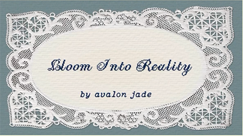
I made a mixed-media animation for this concept that you can watch here!
My Inspiration
It started off by journaling. I was really inspired by how much my life was changing because I started making intentional effort in working toward my goals. I made a comic to verbalize that and it became the foundation for this concept.
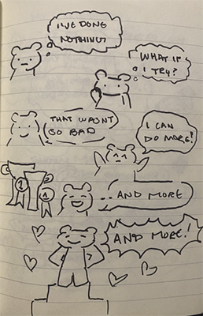
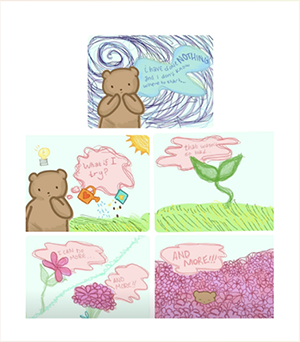
A Homage to Art
It's also inspired by everything that has influenced my decision to follow my own dreams by pursuing a creative career. It's a homage to my favorite art movements such as Rococo, Surrealism, and Impressionism. It is also loosely inspired by Studio Ghibli's Secret World of Arrietty because Hayao Miyazaki's work has spearheaded my endless passion for art at a young age.
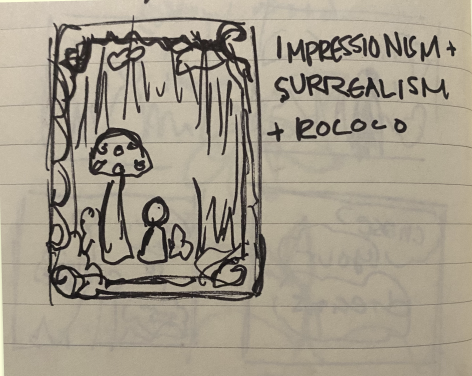
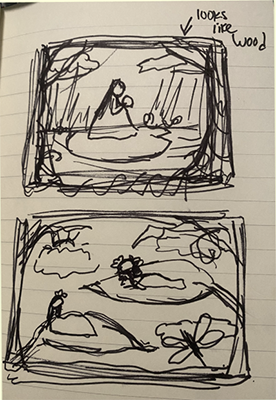
Behind the Scenes
For the shoot, I did the makeup, photography, and styling. We did this shoot in the hallway of the university's art building. It was crowded, but we worked with it.
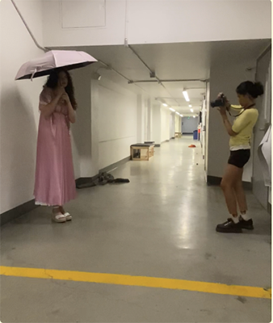
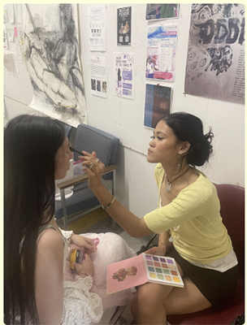
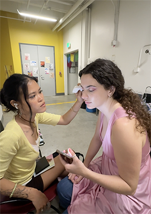
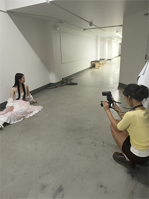
Raw Photos
What some of the raws looked like before editing!
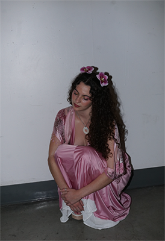
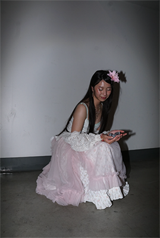
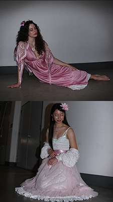
Results
This is what I transformed them into after countless hours on Photoshop and Illustrator.
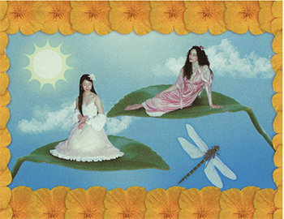
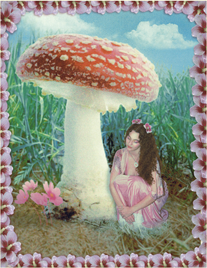
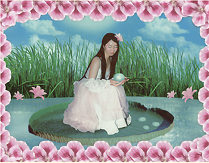